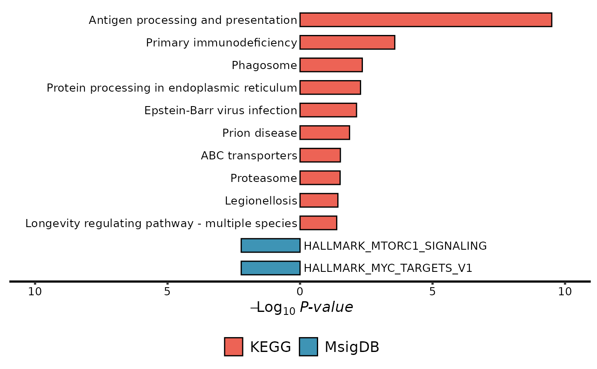

Enrichment barplot for two ORA enrichment objects
ORA_two_barplot.RdPlot enrichment barplot for two ORA enrichment objects.
Usage
ORA_two_barplot(
enrich.obj1,
enrich.obj2,
Selct.P = c("FDR", "P"),
cutoff.P = 0.05,
obj.types = c("Up", "Down"),
obj.type.colors = c("#ED6355", "#3E94B5"),
obj1.top.pathway.num = 10,
obj2.top.pathway.num = 10,
bar.width = 0.6,
add.bar.border = T,
x.limit.fold = 1.05,
label.size = 3.5,
legend.position = "bottom"
)Arguments
- enrich.obj1
An
enrichResultobject from clusterProfiler.- enrich.obj2
An
enrichResultobject from clusterProfiler.- Selct.P
P value (P) or adjust P value (FDR) were selected to define significant terms.
- cutoff.P
A cutoff value for
Select.P.- obj.types
Two characters for defining the types of two objects.
- obj.type.colors
Two colors for the types of two objects.
- obj1.top.pathway.num
The number of top pathways in object 1. Based on the significant test.
- obj2.top.pathway.num
The number of top pathways in object 2. Based on the significant test.
- bar.width
Width of bar in the plot.
- add.bar.border
Logical. Whether to add the black border of bars.
- x.limit.fold
Specify the fold of x limitation.
- label.size
Fontsize of label.
- legend.position
none, left, right, top, bottom; Or Two numeric variables indicated x and y positions, respectively.
Examples
genes <- c("CANX", "HSPA1B", "KLRC2", "PSMC6", "RFXAP", "TAP1")
res1 <- simple_ORA(genes, enrich.type = "KEGG")
#> ℹ Updating gene symbols...
#> Maps last updated on: Fri May 17 15:09:37 2024
#> ℹ Transforming "SYMBOL" to ENTREZID...
#> 'select()' returned 1:1 mapping between keys and columns
#> ℹ Performing KEGG enrichment...
#> ℹ 5 significant terms were detected...
#> ✔ Done!
res2 <- simple_ORA(genes, enrich.type = "MsigDB")
#> ℹ Updating gene symbols...
#> Maps last updated on: Fri May 17 15:09:37 2024
#> ℹ Transforming "SYMBOL" to ENTREZID...
#> 'select()' returned 1:1 mapping between keys and columns
#> ℹ Performing MsigDB-"H" enrichment...
#> ℹ 2 significant terms were detected...
#> ✔ Done!
ORA_two_barplot(res1, res2, Selct.P = 'P', obj.types = c("KEGG", "MsigDB"))
